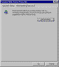
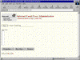
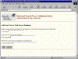
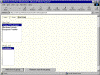
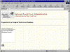
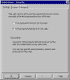
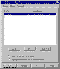
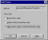

|
| ||
|
| ||
Brought to you by Inside Microsoft FrontPage, a ZD Journals publication. Click here for a free issue  .
.
As a Webmaster, you're probably especially interested in safeguarding the sites you build. After spending many hours or days constructing a site, you'd be disheartened to have someone invade and destroy it.
Fortunately, the FrontPage Server Extensions and Microsoft Personal Web Server provide some good security measures. All you have to do is take advantage of these features. In this article, we'll give you an overview of how to protect your FrontPage sites.
The key to FrontPage's security system is the use of permissions -- varying levels of access to the site that you can assign to yourself and others. By restricting permissions, you effectively prevent unwanted intrusions into your site. Let's take a look at the permissions you have available.
First, browse permission lets people visit your site by using a browser, as the name implies. The key here is that the person visiting the site must use a browser, not FrontPage Explorer or Editor. They can explore the site, but they can't make any changes.
Next is author permission. With this permission, you can designate for certain users the ability to use FrontPage Editor to create or change your site's content. They can't use FrontPage Explorer to add or delete Webs, although they can use it to view the site's contents.
Finally, you can assign administer permission. People with this level of permission can do everything: browse, edit content, create Webs, and delete Webs.
People at the author and administer level also have the same rights as the next lower level. Therefore, someone with author permission also has browse permission.
Table A summarizes the three levels of permission.
| Level | Browse Site | Edit Content | Add/Delete Webs | Software |
| Browse | Yes | No | No | Any browser |
| Author | Yes | Yes | No | FrontPage Editor |
| Administer | Yes | Yes | Yes | FrontPage Editor and Explorer |
As you'll see shortly, you can base a subWeb's permissions on the root Web's settings. Or, you can set unique permissions for a given subWeb. Chances are, you'll choose the latter option.
To set permissions, you select Permissions . . . from the Tools menu in FrontPage Explorer. First, however, you must set up your user(s) on the Personal Web Server.
To create a user, double-click the Microsoft Personal Web Server icon in the system tray to bring up the dialog shown below.

Click image to enlargeClick the Administration tab, then click the Administration button. Doing so will bring up the Web server's browser-based administration tool. Click the Local User Administration item to move to the page shown here:.

Click image to enlargeNow, let's add our first user. Click the New User . . . button to bring up the page shown in below.

Click image to enlargeIn the User Name field, type George Washington. Then, in each of the Password fields, type prez. To safeguard security, you'll see only asterisks when you complete the Password fields. When you're done, click Add to return to the Users page. You'll find that George Washington is now registered as a user on your server.
Now, go back and add a second user, Abraham Lincoln. Type abe for the password. Finally, add a third user, Benjamin Franklin and give him the password kite.
Next, we'll create a group of all the presidents who are users on our server. To do so, click the Groups tab at the top of the page. Click the New Group . . . button and type Presidents in the Group Name field.
At this point, we've created the group, but it doesn't have any members. To add members, click the User/Group tab to reach the page shown here:

Click image to enlargeSelect George Washington from the User list and Presidents from the Group list. Then, click the Add User To Group button. Repeat this procedure with Abraham Lincoln. Ben never made it to the White House, so he's left out of this group.
You won't receive any feedback when you add users to a group. However, you can get a list of group members. To do so, click the Groups tab, select the group name, and click Properties . . .. You'll see a page similar to the one below.

Click image to enlargeNow that we've created some members and a group, let's see how we give them access to a FrontPage-based Web site. First, launch FrontPage Explorer and create a new one-page Web called Security. Choose Permissions . . . from the Tools menu to bring up the dialog box shown here:

Click image to enlargeThe Settings page asks whether the current Web should inherit the settings from your root Web. You'll probably want to choose the second option, Use Unique Permissions For This Web, instead. That way, you can safeguard your root Web while giving people access to certain subWebs: for example, Security.
When you enable the Unique Permissions option button, you'll be able to access the Users and Groups tabs. Click the Users tab now to go to the page shown here.

Click image to enlargeFirst, notice the two options at the bottom of the page. In most cases, you'll want to keep the default setting, which gives everyone (in the world) browse access. But for some sites -- on an intranet, for example -- you may want to restrict this access. We'll accept the default setting for our example.
At this point, you as the administrator automatically have full access to the Web. Now, let's give another user some access as well. Click the Add . . . button, and you'll see the list of users we created earlier.
We'll give President Washington author permission, so select George Washington, then click the Author And Browse This Web option button. Finally, click the Add button. Repeat the same procedure for Abraham Lincoln.
We'd like to add Ben Franklin and grant him full access. There's a problem here, however: The option buttons at the bottom affect all the users we add. Fortunately, there's a workaround.
Add Ben Franklin, but don't worry about changing the access setting. Now, click OK to confirm your changes. You'll see that all three users have been added to the list of users.
Now, click on Benjamin Franklin, then click Edit . . .. as the figure below shows, using this method you can easily change the access settings for an individual user.

Click image to enlargeGive Ben full access, then click OK. The users list will now show that Franklin has more privileges than the other two users.
The other button on the Users page is self-explanatory. To remove a user, select his or her name and click Remove.
So far, we've given permission only to individual users. What about our Presidents group?
You can assign permissions for a group just as you did for a single user. Simply click the Groups tab in the Permissions dialog box, then click the Add . . . button.
If you've established a group with a large number of members, it's much more efficient to set group permissions. That way, you don't have to assign individual permissions to each member. Instead, you can assign (or revoke) access to everyone in the group in a single step.
The capabilities you'll find in the Permissions dialog box will vary based on which Web server you use. Some servers, for example, let you restrict access based on IP (Internet Protocol) addresses.
On the Internet, each computer has a unique IP address in the following format: 123.456.789.00. If you're creating an intranet site for your company and know that every potential user's IP address begins with 123.456, then you can easily restrict access to those users. To do this, you set up an IP mask with asterisks. In other words, an IP mask of 123.456.***.** would allow access (at whatever level you specify) to anyone whose IP address begins with 123.456.
IP masks won't work on networks where IP addresses are dynamically assigned (in settings where users dial in for access, for example). For more information, consult your network administrator.
Web site security is a serious concern. Without access restrictions, anyone could make unauthorized changes to your site. Fortunately, FrontPage and the Microsoft Personal Web Server give you adequate control over the levels of access you grant your users. In this article, we've shown you how to take advantage of these security features
Did you find this material useful? Gripes? Compliments? Suggestions for other articles? Write us!
© 1999 Microsoft Corporation. All rights reserved. Terms of use.